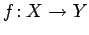

Inhalt Index DeskTop Bronstein

 Algebra und Diskrete Mathematik Kryptologie Verfahren mit öffentlichem Schlüssel
Algebra und Diskrete Mathematik Kryptologie Verfahren mit öffentlichem Schlüssel


Chiffrierfunktionen in Verfahren mit öffentlichem Schlüssel müssen Einwegfunktionen mit ,,Falltür`` sein. Unter Falltür versteht man hier eine geheim zu haltende Zusatzinformation.
Eine injektive Funktion  heißt Einwegfunktion mit Falltür, falls die folgenden Bedingungen gelten: